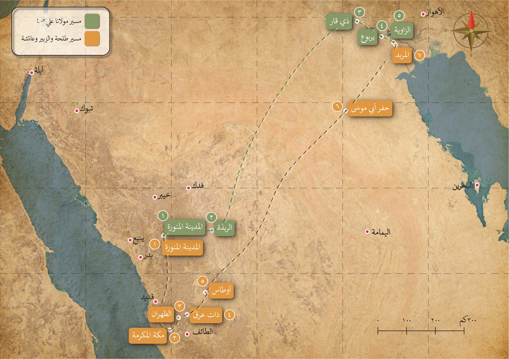
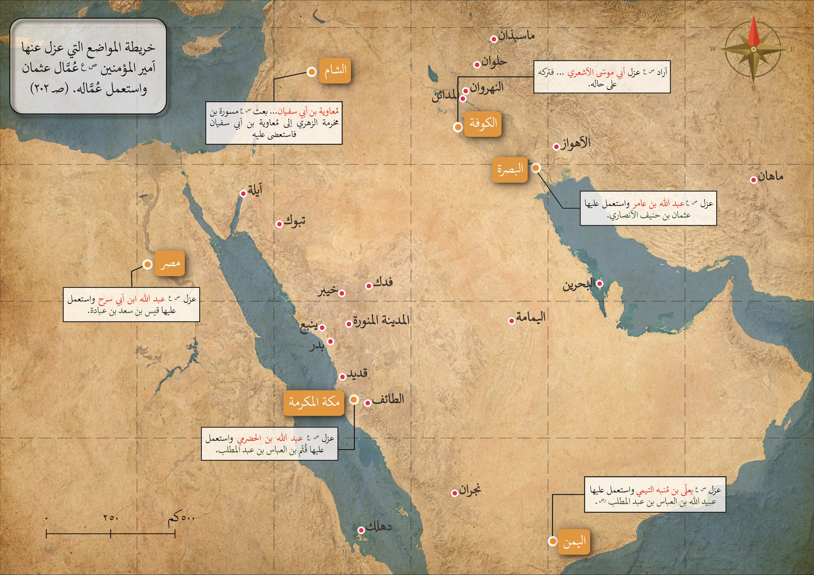
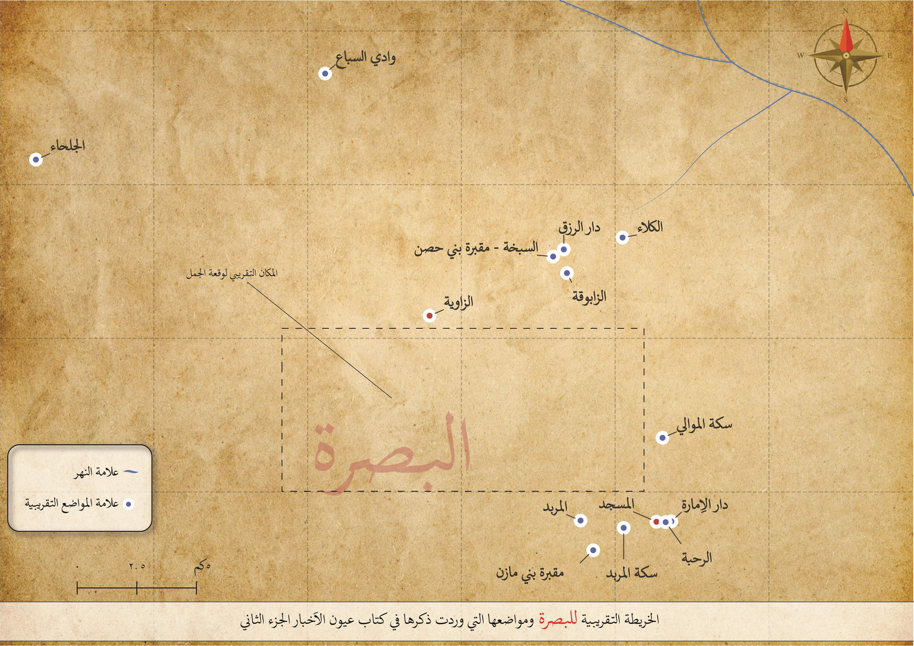

الخرائط
الخرائط
خريطة الأماكن التي وردت في كتاب عيون الأخبار - الجزء الثاني

الخريطة التي توضح مسير العساكر

الخريطة التي توضح عزل امير المؤمنين ع م لعمال عثمان من الولايات واستعماله عماله

المواضع التقريبية في البصرة
×
❯
❮